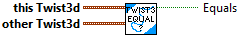

Constructs a Twist3d with the given values.
Parameters:
- dx - Change in x direction relative to robot.
- dy - Change in y direction relative to robot.
- dz - Change in z direction relative to robot.
- rx - Rotation vector x component.
- ry - Rotation vector y component.
- rz - Rotation vector z component.
Results:
- TWIST3D - TWIST3D data structure

Checks equality between this Twist3d and another Twist3d.
Parameters:
- this twist3d -- This TWIST data structure
- other twist3d -- The other TWIST data structure to compare to
Returns:
- equals - Returns TRUE if both TWISTS are equal

Get the individual components of the TWIST3D data structure
Parameters:
- in twist3D -- TWIST3D data structure
Returns:
- dx - Linear "dx" component.
- dy - Linear "dy" component.
- dz - Linear "dz" component.
- rx -- Rotation vector x component (radians)
- ry -- Rotation vector y component (radians)
- rz -- Rotation vector z component (radians)